Rhétorique et esprit critiqueRhetoric and Critical Thinking
- 1. Sommes-nous influençables ? (spoiler : oui, et ce n'est pas grave)1. Are we easily influenced? (spoiler: yes, and that's OK)
- 2. Les outils de la rhétorique : ethos, pathos, logos.2. The tools of rhetoric: ethos, pathos, logos.
- 3. Comment mieux débattre, sans tromper ni se faire tromper.3. How to debate better, without deceiving or being deceived.
DéfinitionDefinition
La rhétoriqueRhetoric
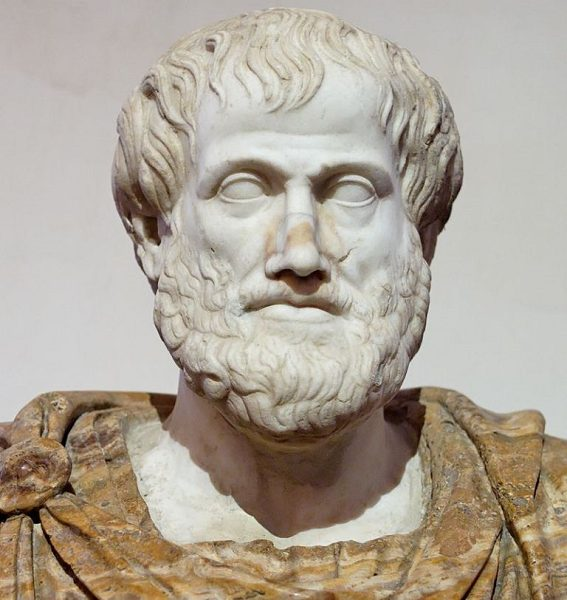
L'art de persuader, convaincre ou impressionner un public en utilisant les mots de manière efficace.The art of persuading, convincing, or impressing an audience by using words effectively.
C'est donc une histoire d'influence.So it's really a matter of influence.
Êtes-vous influençable ?Are you easily influenced?
Nous sommes des créatures sociales, et donc très influençables. Deux exemples pour s'en convaincre.We are social creatures, and therefore highly susceptible to influence. Two examples to prove it.
Expérience classiqueA classic experiment
L'expérience d'AschAsch's experiment
Face à un groupe qui répond faux à l'unanimité, une personne sur trois se rallie à la mauvaise réponse, juste pour éviter le désaccord.Faced with a group that unanimously gives a wrong answer, one person in three goes along with the wrong answer too, just to avoid disagreement.
Un chargeur à choisir sur Amazon…Choosing a charger on Amazon…
Deux chargeurs identiques. L'un a 2 686 avis positifs, l'autre plus de 3 000 avis négatifs. Lequel prenez-vous ?Two identical chargers. One has 2,686 positive reviews, the other over 3,000 negative reviews. Which one do you pick?
Vous venez d'être influencé : par les autres acheteurs, sans même les connaître. Et ce n'est pas un problème : c'est une preuve sociale, un raccourci souvent utile. Le souci commence quand on ne sait plus qu'on l'utilise.You've just been influenced: by other buyers, without even knowing them. And that's not a problem: it's social proof, an often useful shortcut. The trouble starts when you no longer realise you're using it.
Explorer les biais cognitifs sur PerceptioExplore cognitive biases on Perceptio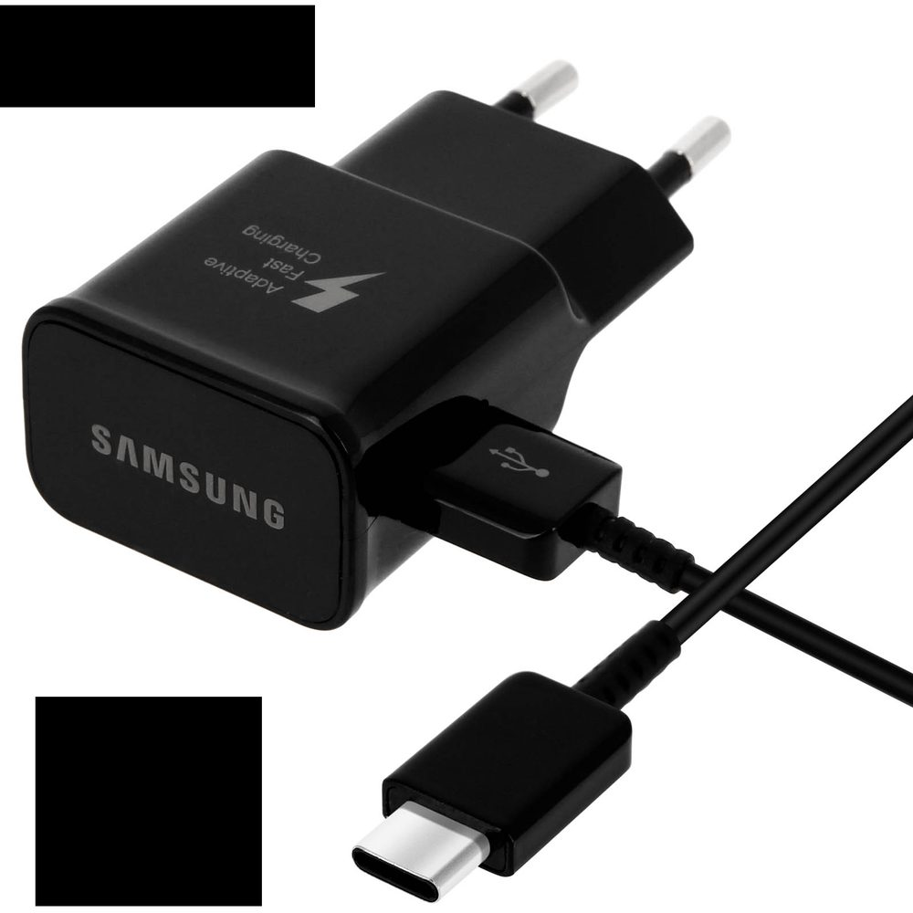
L'influence sociale est un aspect fondamental de l'humanité. Ce n'est ni bien ni mal, c'est comme ça.Social influence is a fundamental part of being human. It's neither good nor bad, it's just how it is.
La rhétorique, c'est un moyen de convaincre par différents procédés. En avoir conscience permet de l'utiliser correctement, et de ne pas se faire avoir.Rhetoric is a way of persuading through various techniques. Being aware of it lets you use it properly, and avoid being fooled by it.
Une rhétorique nécessite…Rhetoric requires…
Un orateur, un interlocuteur, un auditoire et un langage.A speaker, a listener, an audience, and a language.
Elle est structurée autour d'une triple dimension : ethos, pathos, logos.It is structured around a triple dimension: ethos, pathos, logos.
Mots clésKey words
Cliquez sur chaque rôle.Click each role.
Auditoire et interlocuteur ne sont pas forcément les mêmes personnes.The audience and the interlocutor aren't necessarily the same people.
1 des 4 manières de débattre1 of 4 ways to debate
MonologueMonologue
L'orateur cherche à convaincre un auditoire, mais l'auditoire ne peut pas lui répondre ou contre-argumenter.The speaker tries to convince an audience, but the audience cannot respond or counter-argue.
Exemple : un discours politique.Example: a political speech.
2 des 4 manières de débattre2 of 4 ways to debate
DélibérationDeliberation
On argumente pour convaincre l'interlocuteur, mais on peut aussi se laisser convaincre. L'idée est de parvenir à un consensus.We argue to convince the other person, but we can also let ourselves be convinced. The goal is to reach a consensus.
Exemple : un couple cherche à décider quoi faire ce soir.Example: a couple deciding what to do tonight.
3 des 4 manières de débattre3 of 4 ways to debate
CompétitionCompetition
Le but n'est pas de convaincre l'interlocuteur (l'adversaire) mais le public.The goal isn't to convince the other party (the opponent) but the audience.
Exemple : un débat politique télévisé.Example: a televised political debate.
4 des 4 manières de débattre4 of 4 ways to debate
ConflitConflict
Le but n'est ni de convaincre l'interlocuteur, ni le public : c'est juste le « plaisir » de la joute verbale.The goal is neither to convince the other person nor the audience: it's just the "pleasure" of verbal sparring.
Exemple : fin de repas de famille, débat avec ton beau-frère aux idées radicalement différentes des tiennes…Example: end of a family dinner, arguing with your brother-in-law whose views are radically different from yours…
Quelques exemplesA few examples
Monologue, délibération, compétition ou conflit ? Cliquez sur chaque situation.Monologue, deliberation, competition, or conflict? Click each situation.
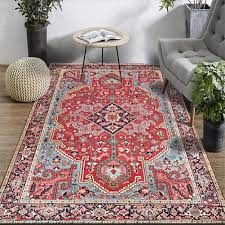
Tu cherches à obtenir une réduction sur le prix de ce magnifique tapis.You're trying to negotiate a discount on this magnificent rug.
DélibérationDeliberation
Vous négociez à deux : chacun peut infléchir l'autre, l'objectif est un accord sur le prix. C'est une délibération.The two of you negotiate: each can sway the other, the goal is agreement on a price. That's a deliberation.
Même situation… mais tu es avec tes amis, qui te chambrent souvent en disant que tu ne sais pas négocier.Same situation… but you're with your friends, who often tease you for being bad at negotiating.
CompétitionCompetition
Le vrai public, ce sont vos amis : vous ne cherchez plus vraiment à convaincre le vendeur, mais à leur prouver quelque chose.The real audience is your friends: you're no longer really trying to convince the seller, but to prove something to them.
L'avocat et le procureur affichent leurs désaccords sur la culpabilité du prévenu.The defence lawyer and the prosecutor argue over the defendant's guilt.
CompétitionCompetition
Ils ne cherchent pas à se convaincre l'un l'autre, mais à convaincre le juge ou le jury, le vrai public du procès.They aren't trying to convince each other, but to convince the judge or jury, the trial's real audience.
L'avocat fait sa plaidoirie.The lawyer delivers their closing argument.
MonologueMonologue
Un discours ininterrompu, comme un discours politique : personne ne peut contre-argumenter en direct.An uninterrupted speech, like a political address: no one can counter-argue live.
Pour qui est-ce que je débats ?Who am I debating for?
Même situation de départ, deux stratégies différentes.Same starting situation, two different strategies.
Endogroupe : mon campIn-group: my side
Convaincre / galvaniser les gens qui pensent déjà comme moi.Convince / rally people who already think like me.
Exogroupe : l'autre campOut-group: the other side
Convaincre les gens qui pensent différemment.Convince people who think differently.
Stratégie « exogroupe »"Out-group" strategy
« Féministe, j'interpelle un propos machiste sur Twitter et tente d'argumenter avec l'auteur pour lui faire comprendre le sexisme de ses propos. »"As a feminist, I call out a sexist comment on Twitter and try to reason with its author to help them see the sexism in what they said."
Stratégie « endogroupe »"In-group" strategy
« Féministe, j'interpelle un propos machiste sur Twitter et montre avec véhémence à son auteur que ses propos sont inadmissibles. »"As a feminist, I call out a sexist comment on Twitter and forcefully show its author that what they said is unacceptable."
Il n'y a pas de bonne ou de mauvaise stratégie : c'est un choix rhétorique et stratégique. En avoir conscience aide à comprendre ce qui se joue vraiment dans un débat.There's no right or wrong strategy: it's a rhetorical and strategic choice. Being aware of it helps you understand what's really at stake in a debate.
Exemple de monologueExample of a monologue
Galvaniser les troupesRallying the troops
Le président galvanise son auditoire avant le combat : aucune contre-argumentation possible.The president rallies his audience before battle: no counter-argument possible.
Autre exemple de monologueAnother example of a monologue
La charge d'ErwinErwin's charge
Même ressort rhétorique dans un tout autre médium : un discours de guerre animé.The same rhetorical device in a completely different medium: an animated war speech.
3 manières de faire de la rhétorique3 ways to do rhetoric
Cliquez sur chaque carte.Click each card.
Ethos
Pathos
Logos
Logos
Lequel est le plus convaincant ?Which one is more convincing?
Et lequel est le plus solide ? Sont-ce les mêmes ? Cliquez sur un tweet.And which one is more solid? Are they the same? Click a tweet.
Le tweet de Léa est vivant, incarné, on ressent sa fatigue : c'est du pathos efficace. Le tweet de ResearchEdu est moins percutant mais s'appuie sur une vraie donnée vérifiable : c'est du logos. Le plus convaincant à chaud n'est pas toujours le plus solide.Léa's tweet is vivid, personal, you can feel her exhaustion: that's effective pathos. ResearchEdu's tweet is less punchy but rests on a real, checkable data point: that's logos. The most convincing in the moment isn't always the most solid.
Logos
Les outils de la logiqueThe tools of logic
Chiffres & statsNumbers & stats
Exemple concretConcrete example
Si… alors…If… then…
Logos
Le syllogismeThe syllogism
Tous les hommes sont mortels.
Socrate est un homme.
DONC Socrate est mortel.All men are mortal.
Socrates is a man.
THEREFORE Socrates is mortal.
Logique, cohérent, imparable.Logical, coherent, unassailable.
Tous les hommes sont mortels.
La reine Margot est mortelle.
DONC la reine Margot est un homme.All men are mortal.
Queen Margot is mortal.
THEREFORE Queen Margot is a man.
Même structure « logique », mais c'est un sophisme : la forme ressemble à un syllogisme valide, le fond ne l'est pas.Same "logical" structure, but it's a fallacy: the form looks like a valid syllogism, the substance isn't.
La fiche syllogisme sur RhetorThe syllogism entry on RhetorEthos
Deux manières de faire de l'ethosTwo ways to do ethos
L'éthique « universelle »"Universal" ethics
Invoquer de grandes valeurs : la justice, la liberté, la solidarité…Invoking grand values: justice, freedom, solidarity…
L'éthique contextuelleContextual ethics
Se baser sur son propre statut, sa réputation, sa situation.Relying on one's own status, reputation, or situation.
« Il est scandaleux que dans le pays des Lumières, des gens dorment encore dehors. »
« Le clonage, c'est mauvais, car c'est jouer à Dieu. »"It's a scandal that in the land of the Enlightenment, people still sleep outside."
"Cloning is wrong, because it's playing God."
Ethos contextuelContextual ethos
Se baser sur le contexte pour donner du poids à sa positionUsing context to give weight to a position
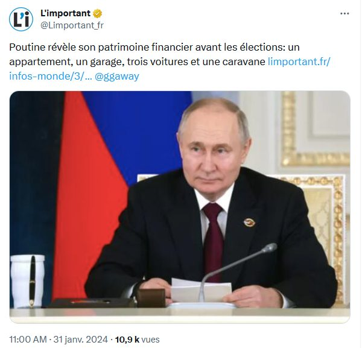
Même procédé rhétorique, deux niveaux de véracité très différents : d'où l'importance de vérifier avant de se laisser convaincre par le personnage plutôt que par les faits.Same rhetorical device, two very different levels of truthfulness, which is why it matters to check facts before letting yourself be convinced by the persona rather than the facts.
L'éthos, un moyen puissant de délégitimer un argumentaireEthos, a powerful way to delegitimise an argument
Harrison Ford tient un discours sur l'urgence climatique sur France 2… avant de repartir dans son jet privé.Harrison Ford gives a speech about the climate emergency on French TV… before flying off in his private jet.
« Faites ce que je dis, pas ce que je fais »"Do as I say, not as I do"
La seule chose qu'on retient de son intervention, c'est cette hypocrisie, pas le fond de son propos sur le climat. Attaquer la personne plutôt que l'argument est très efficace… mais ce n'est pas toujours pertinent sur le fond. C'est ce qu'on appelle un argument ad hominem.The only thing people remember from his speech is this hypocrisy, not the substance of what he said about climate. Attacking the person rather than the argument is very effective… but it's not always relevant to the substance. This is what's called an ad hominem argument.
La fiche ad hominem sur RhetorThe "ad hominem" entry on Rhetor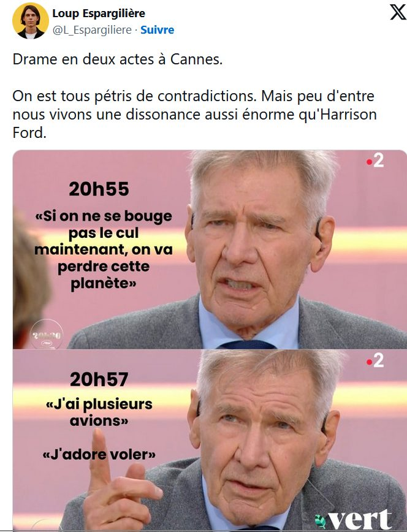
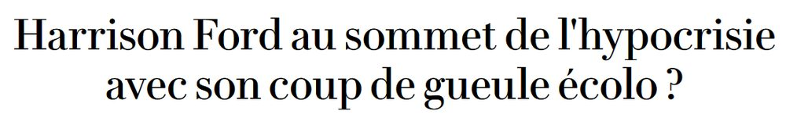
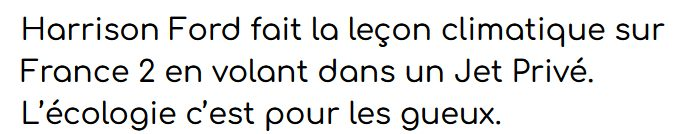
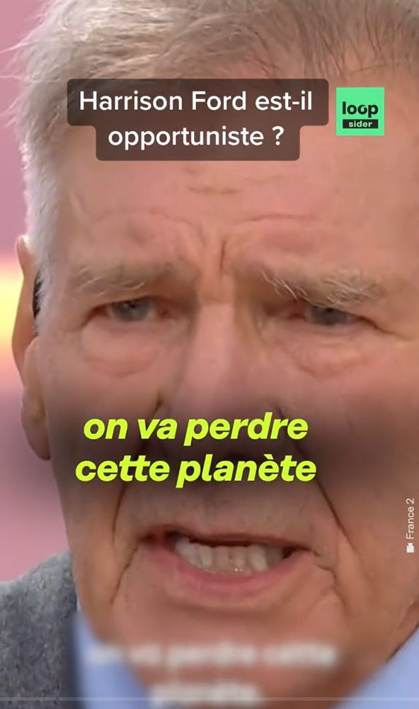
Pathos
Chercher à convaincre par l'émotion, l'empathieTrying to convince through emotion, empathy
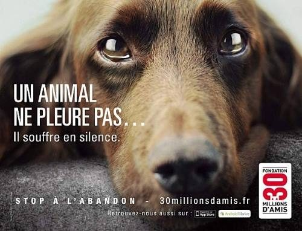
Très utilisé en politique (discours de Sarah Palin, États-Unis) comme sur les réseaux sociaux, pour galvaniser ou engranger des likes et des dons.Widely used in politics (Sarah Palin's speeches, US) as well as on social media, to rally supporters or rack up likes and donations.
Pathos · rumeur et peurPathos · rumour and fear
« They're eating the pets »
Lors d'un débat présidentiel télévisé, Donald Trump affirme que des migrants mangeraient les animaux de compagnie des habitants de Springfield : une rumeur sans fondement, mais qui frappe l'imagination et se propage à toute vitesse.During a televised presidential debate, Donald Trump claims migrants are eating the pets of Springfield residents: a baseless rumour, but one that captures the imagination and spreads at lightning speed.
Plus une affirmation est choquante, plus elle est virale, vraie ou pas.The more shocking a claim, the more viral it goes, true or not.
Le pouvoir de l'IA sur FacebookThe power of AI on Facebook
Quand l'émotion déclenche l'HistoireWhen emotion triggers History
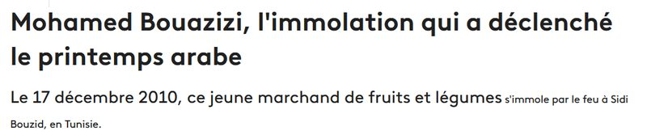
Mohamed Bouazizi
Le 17 décembre 2010, ce jeune marchand tunisien s'immole par le feu : l'événement déclenche le Printemps arabe.On 17 December 2010, this young Tunisian street vendor set himself on fire: the event triggered the Arab Spring.
George Floyd
Sa mort en 2020 déclenche un mouvement mondial de manifestations : Black Lives Matter.His death in 2020 triggered a global wave of protests: Black Lives Matter.
Deux événements réels dont la charge émotionnelle a mobilisé des millions de personnes : le pathos n'est pas qu'une technique publicitaire.Two real events whose emotional weight mobilised millions of people: pathos isn't just an advertising technique.
Quel outil est utilisé ?Which tool is being used?
Débat sur l'interdiction du téléphone au collège : cliquez sur chaque message.Debate on banning phones in middle school: click each message.
Marie, maman inquiète · @marie_maman75Marie, maman inquiète · @marie_maman75
Mon fils a été harcelé en ligne pendant 6 mois. Il ne dormait plus, ne mangeait plus. Ces applis DÉTRUISENT nos enfants.My son was cyberbullied for 6 months. He stopped sleeping, stopped eating. These apps are DESTROYING our children.
PathosPathos
L'émotion d'une mère inquiète, un vécu personnel douloureux : ça touche avant de convaincre par la preuve.A worried mother's emotion, a painful personal experience: it moves you before it convinces you with evidence.
Dr Sophie Merle · @drmerle_psyDr Sophie Merle · @drmerle_psy
Après 15 ans en consultation pédopsychiatrique, je confirme : l'exposition aux réseaux avant 13 ans fragilise durablement l'estime de soi.After 15 years in child psychiatry practice, I can confirm: social media exposure before age 13 durably weakens self-esteem.
EthosEthos
Son autorité vient de son expertise et de son expérience professionnelle affichée : 15 ans de consultation.Her authority comes from her stated expertise and professional experience: 15 years of practice.
StatsFrance · @stats_france_offStatsFrance · @stats_france_off
En 2023, 1 collégien sur 5 déclare avoir subi du cyberharcèlement (baromètre UNICEF France). Le phénomène a doublé en 5 ans.In 2023, 1 in 5 middle schoolers reported experiencing cyberbullying (UNICEF France barometer). The phenomenon has doubled in 5 years.
LogosLogos
Des chiffres, une source citée : on convainc par la donnée mesurable.Numbers, a cited source: it convinces through measurable data.
Tom · @tom_gamer14Tom · @tom_gamer14
Interdire les téléphones au collège c'est nous traiter comme des criminels !! On est des élèves, pas des prisonniers. C'est RÉVOLTANT.Banning phones in middle school is treating us like criminals!! We're students, not prisoners. It's OUTRAGEOUS.
PathosPathos
L'indignation et l'exagération (« criminels », « prisonniers ») jouent sur l'émotion, pas sur la preuve.The outrage and exaggeration ("criminals", "prisoners") play on emotion, not on evidence.
Axel, lycéen · @axel_debatAxel, lycéen · @axel_debat
Si les notifications arrivent en cours → élève distrait. Si distrait → il retient moins. Donc : le téléphone nuit à l'apprentissage.If notifications arrive during class → student gets distracted. If distracted → retains less. Therefore: phones harm learning.
LogosLogos
Un enchaînement « si… alors… » : un raisonnement logique, étape par étape.An "if… then…" chain: step-by-step logical reasoning.
M. Blanc, prof de français · @mrblanc_lettresM. Blanc, prof de français · @mrblanc_lettres
En 28 ans de classe, jamais je n'ai vu des élèves aussi peu capables de lire plus de 10 min d'affilée. Le téléphone a tout changé.In 28 years of teaching, I've never seen students so unable to read for more than 10 minutes straight. Phones changed everything.
EthosEthos
L'autorité vient ici de l'ancienneté et de l'expérience de terrain : 28 ans de classe.The authority here comes from seniority and hands-on experience: 28 years in the classroom.
À vous de jouerYour turn
- Convaincre les professeurs d'organiser une sortie scolaire.Convince the teachers to organise a school trip.Ethos : « Nous MÉRITONS d'y aller car… » ; Logos : « Il est LOGIQUE d'y aller car… » ; Pathos : « Je joue sur l'EMPATHIE pour vous convaincre… »Ethos: "We DESERVE to go because…"; Logos: "It's LOGICAL to go because…"; Pathos: "I'm playing on EMPATHY to convince you…"
- Organiser un cache-cache géant dans l'établissement.Organise a giant game of hide-and-seek in the school.À vous de construire un argument ethos, un logos, un pathos.Build one ethos argument, one logos argument, one pathos argument.
- Organiser un paintball géant dans l'établissement.Organise a giant paintball game in the school.Même exercice.Same exercise.
- Vous êtes militant et voulez alerter sur le réchauffement climatique.You're an activist and want to raise the alarm about climate change.Créez la meilleure accroche possible !Craft the best possible hook!
ExerciceExercise
Vous êtes ministre de l’Économie : vous devez annoncer une augmentation d’impôts pour couvrir le déficit public.You are the finance minister: you must announce a tax increase to cover the public deficit.
EthosEthos
LogosLogos
PathosPathos
ExerciceExercise
Vous êtes député : vous voulez convaincre l’Assemblée d’envoyer des armes supplémentaires en Ukraine.You are an MP: you want to convince Parliament to send more weapons to Ukraine.
EthosEthos
LogosLogos
PathosPathos
ExerciceExercise
Vous êtes député : vous voulez convaincre l’Assemblée d’arrêter d’envoyer des armes supplémentaires en Ukraine.You are an MP: you want to convince Parliament to stop sending more weapons to Ukraine.
EthosEthos
LogosLogos
PathosPathos
Les questions à se poser sur le prochain discoursQuestions to ask about the next speech
Quel est le but de l’orateur ?What is the speaker’s goal?
Comment peut-on résumer son propos en quelques phrases ?How can the speech be summed up in a few sentences?
Comment parvient-il à son but ?How does the speaker achieve that goal?
Quelles sont toutes les techniques qu’il utilise ?What techniques does the speaker use?
Un des plus grands discours au mondeOne of the greatest speeches in the world
« I have a dream »
Martin Luther King mobilise à la fois l'ethos (sa légitimité morale), le pathos (l'émotion de la foule) et le logos (la cohérence de son propos).Martin Luther King draws on all three at once: ethos (his moral legitimacy), pathos (the crowd's emotion), and logos (the coherence of his argument).
Quels outils avons-nous vus ?What tools have we seen?
- Monologue, délibération, compétition, conflit.Monologue, deliberation, competition, conflict.
- Endogroupe / exogroupe.In-group / out-group.
- Ethos, pathos, logos.Ethos, pathos, logos.
- Syllogismes… et sophismes.Syllogisms… and fallacies.
DevinetteRiddle
Que pensez-vous de ces phrases ?What do you think of these sentences?
« Les drogues, c'est mauvais, donc il faut les interdire ! »"Drugs are bad, so they must be banned!"
« Nous sommes omnivores, donc nous devons continuer à manger de la viande. »"We are omnivores, so we must keep eating meat."
« Nous sommes omnivores, donc nous devons nous passer de manger de la viande. »"We are omnivores, so we should stop eating meat."
Ces trois phrases, pourtant opposées sur le fond, commettent exactement la même erreur logique : elles tirent un DEVOIR (il faut / nous devons) d'un simple FAIT (c'est mauvais / nous sommes omnivores). Un fait ne dicte jamais, à lui seul, une seule conclusion.These three sentences, despite disagreeing on substance, commit exactly the same logical error: they derive an OUGHT (must / should) from a mere FACT (it's bad / we're omnivores). A fact alone never dictates a single conclusion.
Pour aller plus loinTo go further
La loi de HumeHume's law
« Aucun raisonnement à l'indicatif ne peut engendrer une conclusion à l'impératif. »"No reasoning in the indicative can produce a conclusion in the imperative."
Fait : les prisons françaises sont saturées.Fact: French prisons are overcrowded.
- Doit-on construire plus de prisons ?Should we build more prisons?
- Trouver des peines alternatives ?Find alternative sentences?
- Libérer les prisonniers aux peines les plus légères ?Release prisoners with the lightest sentences?
Fait : le réchauffement climatique est une réalité.Fact: climate change is real.
- Doit-on interdire les voitures ?Should we ban cars?
- Développer le nucléaire ?Develop nuclear power?
- Développer les énergies renouvelables ?Develop renewable energy?
Le fait ne dicte jamais une seule conclusion : le passage du constat à l'action est toujours un choix de valeurs.A fact never dictates a single conclusion: moving from observation to action is always a choice of values.
Comment mieux débattreHow to debate better
À éviter / à développerTo avoid / to build
L'homme de pailleThe straw man
Caricaturer le propos de son contradicteur pour attaquer la caricature plutôt que le vrai argument.Caricaturing the opponent's argument in order to attack the caricature rather than the real point.
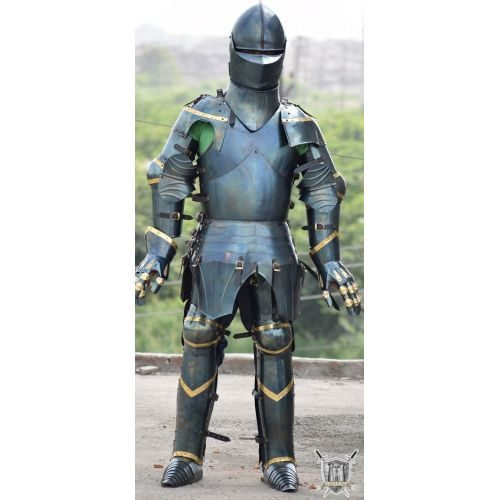
L'homme de ferThe steel man
Reformuler fidèlement l'argument de l'autre avant d'y répondre : ça casse l'engrenage du conflit et permet un vrai débat de fond.Faithfully restating the other person's argument before responding: it breaks the escalation of conflict and allows a real, substantive debate.
Un réflexe à garderA reflex worth keeping
Sommes-nous en délibération, en compétition, ou en conflit ?Are we deliberating, competing, or in conflict?
Avant de dégainer l'homme de fer, une question utile : qu'est-ce que je cherche vraiment dans cette discussion précise ? Convaincre mon interlocuteur ? Un public qui nous regarde ? Ou juste le plaisir de la joute ?Before reaching for the steel man, a useful question: what am I really after in this particular discussion? Convincing the other person? An audience watching us? Or just the pleasure of sparring?
Utilisez les arguments qui parleront à votre interlocuteurUse the arguments that will speak to your listener
Aux États-Unis, pendant le Covid, on n'a pas convaincu les mêmes personnes avec les mêmes arguments : « protéger les plus faibles » pour convaincre les démocrates, « le vaccin est américain, une fierté nationale » pour convaincre les républicains.In the US, during Covid, different people weren't convinced by the same arguments: "protect the most vulnerable" to convince Democrats, "the vaccine is American, a national point of pride" to convince Republicans.
Se mettre à la place de la personne en face : quel argument fonctionnerait pour elle ?Put yourself in the other person's shoes: which argument would work for them?
Comment mieux débattreHow to debate better
La recherche de point d'accordLooking for common ground
Nous avons donc un objectif commun : protéger les gens.So we actually share a common goal: protecting people.
Ça n'efface pas le désaccord sur la méthode, mais ça rend le débat beaucoup plus serein, et beaucoup plus riche.It doesn't erase the disagreement over method, but it makes the debate far calmer, and far richer.
Merci !Thank you!
L'art rhétorique se pratique plus qu'il ne s'apprend.The art of rhetoric is practised more than it's learned.
Après la séanceAfter the session
Le bilan, les jeux, et votre retourSummary, games, and your feedback
Scannez ce QR code : vous pourrez donner votre retour, revoir le bilan de la formation ou rejouer aux jeux.Scan this QR code: you can leave your feedback, review the session summary, or play the games again.
![QR code vers la page antoninatger.github.io/interventions/retours]() antoninatger.github.io/interventions/retours →antoninatger.github.io/interventions/retours →
antoninatger.github.io/interventions/retours →antoninatger.github.io/interventions/retours →